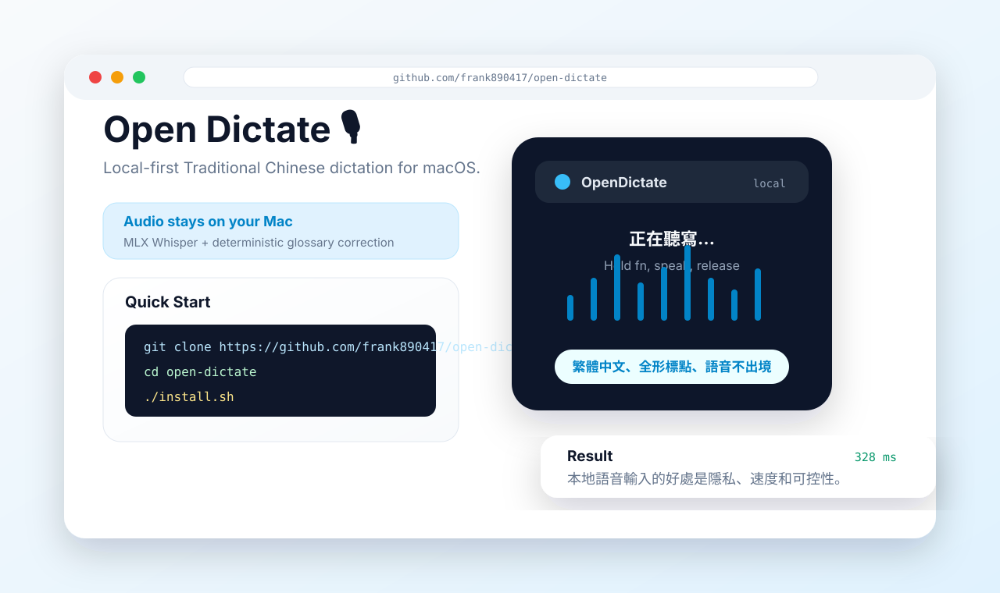

本地運算
核心語音路徑在 Apple Silicon macOS 上執行，音檔預設留在本機。
LOCAL-FIRST · TRADITIONAL CHINESE · macOS
按住快捷鍵、說話、放開。Open Dictate 在 Apple Silicon 上本地轉錄繁體中文，把結果送到游標，而不是送出你的 Mac。
Early public seed · MIT
按住滑鼠或空白鍵模擬錄音，放開後顯示轉錄結果。
語音不出境，文字不失控。
01 / CONTROL
「系統可以標記、可以建議，
但不能靜默改寫意思。」
Open Dictate 用 MLX Whisper 在本機轉錄，再套用你擁有的確定性詞庫。它寧可漏改，也不錯改；每個候選詞都先經過你審核。
核心語音路徑在 Apple Silicon macOS 上執行，音檔預設留在本機。
Push-to-talk：按住 fn 或右側 Option，放開便把文字送到游標。
把本機音檔整理成可審核的 Markdown、JSONL、SRT 或 VTT 逐字稿包。
疑似誤聽進入候選佇列；只有接受後，才成為下一次的確定校正。
02 / THE LOOP
03 / INSIDE
Swift 選單列外殼、常駐 MLX daemon、會議 CLI、QA 掃描與審核佇列，全都能在公開 repo 裡閱讀與檢驗。

YOUR VOICE · YOUR MACHINE · YOUR WORDS